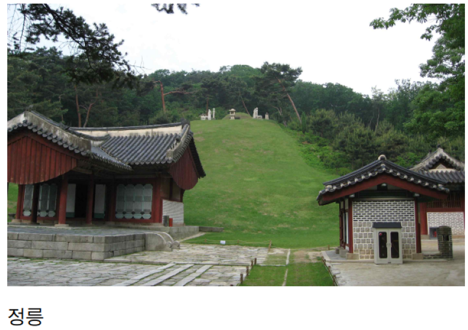
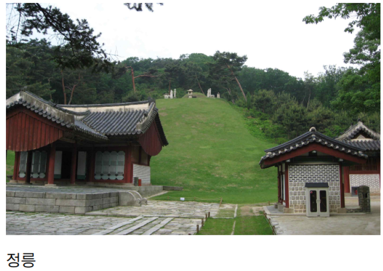

국민대학교의 역사를 한눈에 2탄! 시작합니다 :)
1. 우리학교 뒷산은 북한산인데 왜 ‘북악’이란 말을 즐겨 쓰나요?
북악은 북한산의 남쪽 지맥의 한 봉우리입니다.
우리학교의 앞산인 셈이죠.
북악이란 말을 즐겨 쓴 이유는 우리 학교가 창성동 캠퍼스였던 시절부터입니다.
창성동에서는 북악산을 좌로 두었기에 당시 국민*인들은 축제, 행사 등에 ‘북악’ 용어를 사용하였고, 1971년 9월 창성동 캠퍼스에서 정릉 캠퍼스로 옮긴 이후에도 ‘북악’이라는 이름은 국민*인 모두에게 회자되며 유지된 것입니다.
2. 우리학교가 터를 잡은 이곳은 예전에 어떤 곳이었나요?
‘정릉(貞陵)’이란 지명은 조선을 건국한 태조 이성계의 두 번째 부인인 신덕왕후의 묘에서 유래되었습니다.
6.25전쟁 이후 산 중턱에 이주 온 사람들이 판잣집이나 토막집을 짓고 살기 시작하면서 마을이 형성되었고, 이곳에 배나무 몇 그루가 있어 ‘배밭골’이라는 지명으로 불리게 되었다고 합니다.
3. 우리학교는 언제 종합대학으로 승격되었나요?
우리나라 대학 학제는 크게 종합대학, 단과대학, 전문대학 등으로 나뉩니다.
종합대학이란 단과대학과 대학원으로 구성되는 학교를 일컫습니다.
우리학교는 1981년에 종합대학으로 승격했는데, 1946년 해방 후 최초의 사립대학인 우리학교가 왜 30여 년씩이나 걸려 종합대학이 되었을까요?
창성동 캠퍼스 시절 학제로만 보면 종합대학의 기준에 충족하였지만 시설, 규모 등으로는 조건에 미흡했다고 합니다.
1971년 9월 창성동에서 정릉으로 캠퍼스를 이전한 후 우리학교는 획기적인 변화를 모색하였습니다.
학과 중심에서 학부 체제로 개편하고, 꾸준한 변화와 발전을 거듭해오며 1980년 9월 29일, 마침내 종합대학으로 승격하였습니다.
4. 가장 오래된 교양과목은 무엇인가요?
우리학교의 교양과목은 1970년대 후반부터 살펴보면 점차 다양화하고 과목 수가 점증했습니다.
우리학교 교양과목에서 가장 오래된 것은 ‘다례(茶禮)’입니다.
다례 과목은 1983년 3월 ‘다도(茶道)’라는 이름으로 처음 개설되었고 지금까지 30년 넘게 계속되고 있습니다.
5. 등교하다 보면 교문이 없는데 원래부터 그랬나요?
개교 시절 우리학교는 교문이 존재했으며, 두 개의 지주 사이에 투시형 철문이 달린 디자인이었습니다.
1972년 만들어져서 30년 가까이 우리학교를 지켰지만, 2000년 즈음하여 한국의 캠퍼스 환경문화가 바뀌면서 ‘대문 없는 캠퍼스’를 실현하게 되며 철거되었습니다.
교문과 담장을 허물며 통제에서 개방으로, 폐쇄에서 지역사회로 대학 환경이 공여되었습니다.
6. 우리학교의 건물 중에 같은 층에 있는데 왜 층수가 달라요?
우리학교는 건물 층수가 달라 자주 찾아오는 재학생들도 애먹는 경우가 종종 있습니다.
이는 우리학교가 북악산 자락에 터를 잡아서 생긴 일들입니다.
산자락을 밀고 터를 잡다 보니 자연스럽게 북고남저(北高南抵)의 지형을 갖게 되었고,
한정된 공간 내에 건물을 신축해야만 했기 때문입니다.
이런 연유로 우리학교는 뒤는 지하이지만 앞은 지상인 경우, ‘지하 같은 지상층’ 또는 ‘지상 같은 지하’가 많습니다.
7. 성곡도서관이 개관한 지 20여 년 됐다던데 그전엔 도서관이 없었나요?
성곡도서관은 1993년에 준공되었지만, 그전에 우리학교에 도서관이 없었던 것은 아닙니다.
우리학교 도서관은 1946년 12월 개교와 더불어 도서과로 발족하면서 비롯하였습니다.
5층 콘크리트 교사가 준공된 이후 1962년 5월 도서관으로 정식 승격하였으며,
10월에는 부설기관으로 시청각실이 설치되었습니다.
8. 우리학교 ‘길고양이’가 유명하다는데 언제부터, 왜 그런가요?
‘국민대 고양이’들이 이름을 가지게 되고 유명해진 것은 그리 오래되지 않았습니다.
2015학년도 2학기, 우리학교는 ‘고양이’ 이야기로 뜨거웠습니다.
페이스북 페이지 ‘국민대 대신 전해드립니다’에 수없이 많은 교내의 고양이들 사진이 업로드되었고, 학생들은 애정과 관심의 눈길을 보냈습니다.
그 결과 준동아리 ‘국민대 고양이 추어오’가 탄생했고, 우리학교 학생과 교직원, 인근 주민 등 약 50명으로 구성되어 있습니다.
지금까지 간략히 국민대학교의 역사를 둘러보셨는데, 어떠셨나요?
앞으로도 국민대학교의 역사가 궁금하거나 관심이 생기신다면 기록물관리위원회를 찾아주세요!